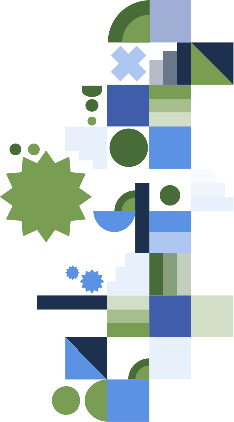
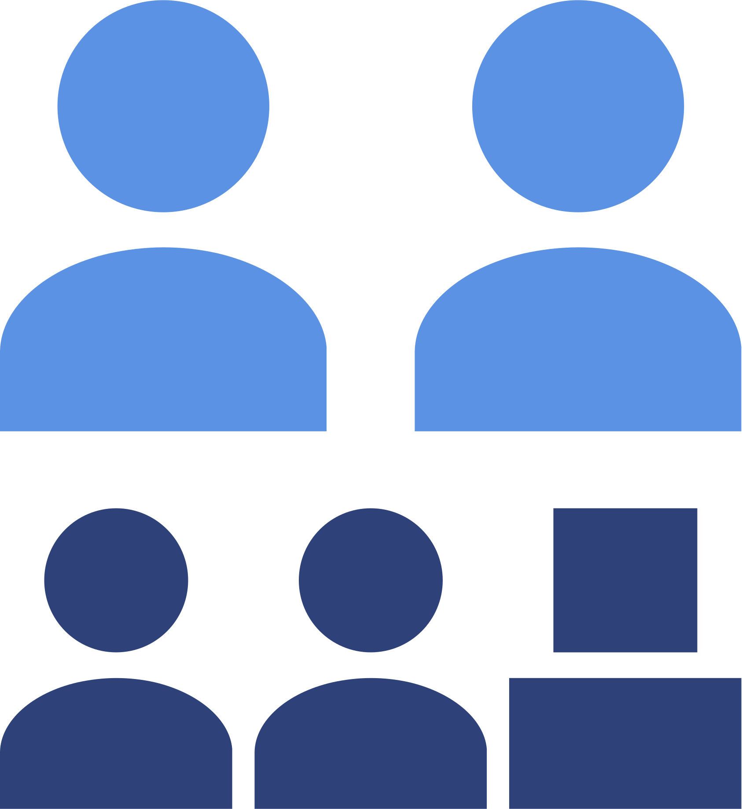
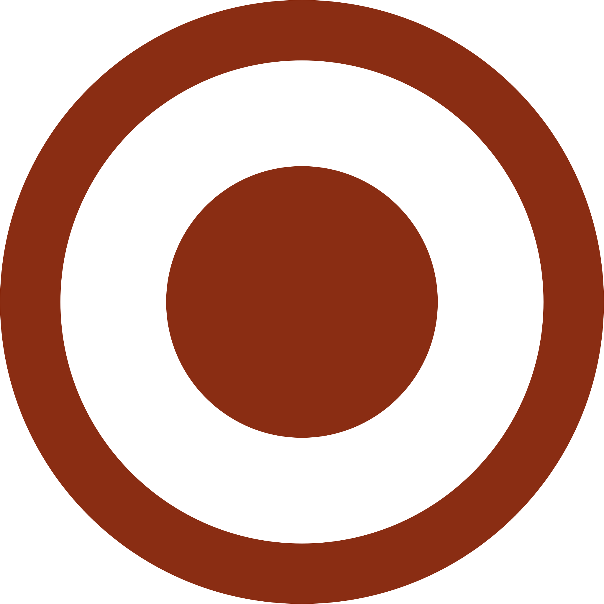
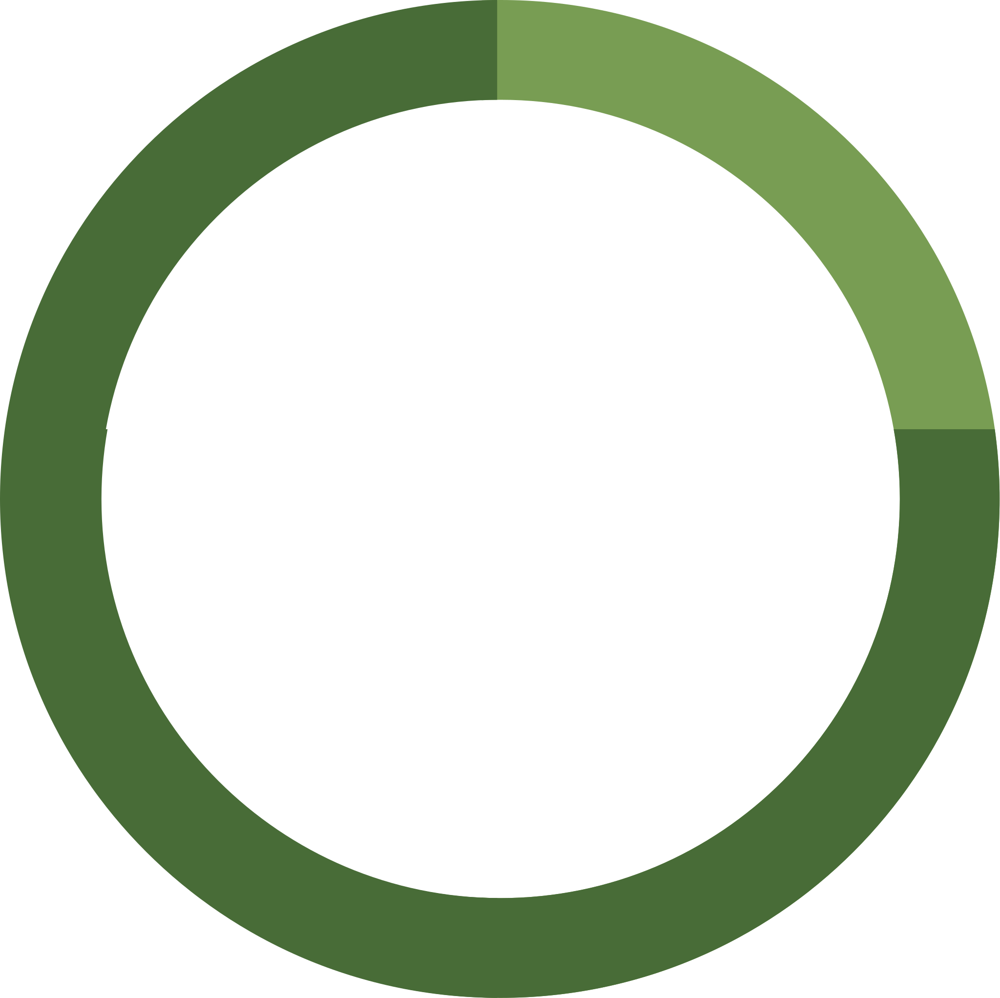
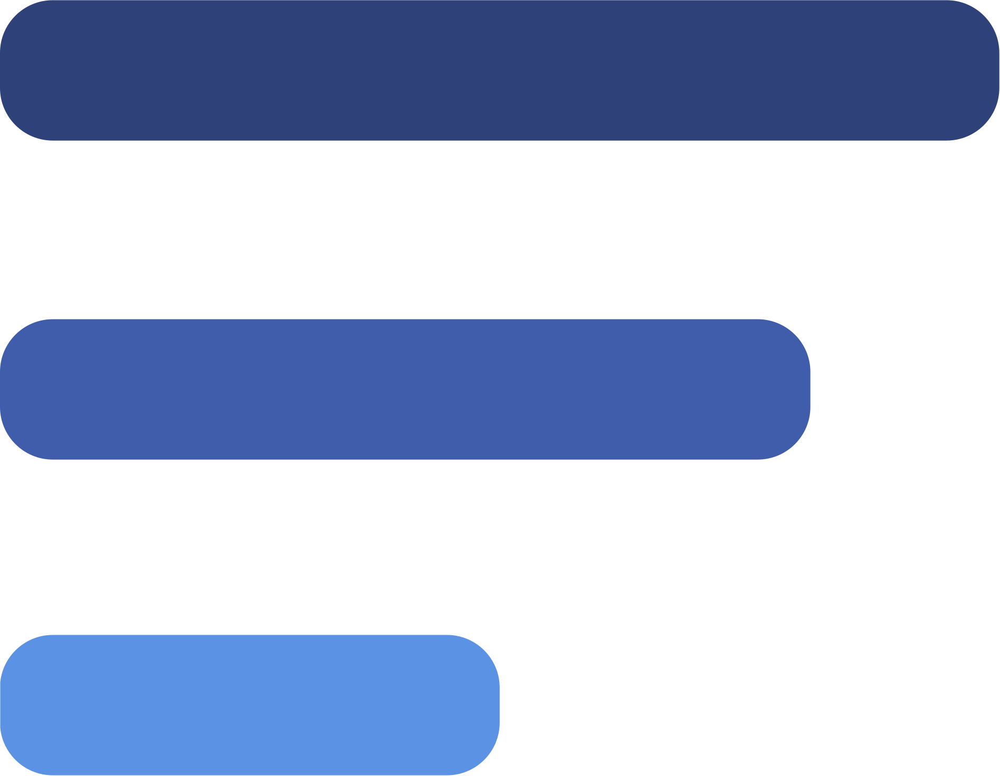
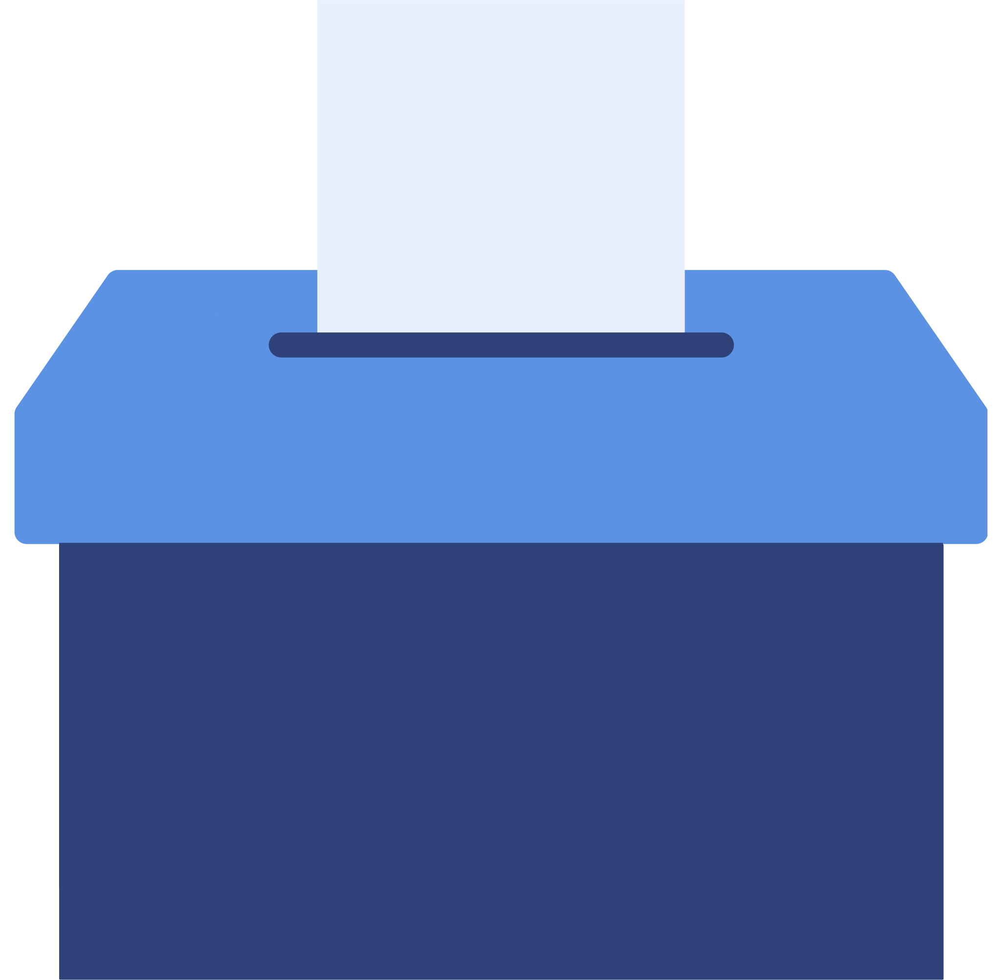

Indicative first-pass coding of the discussion corpus against design principles and the intended weekly themes.
% of corpus units evidencing each principle — indicative first pass
% of each week's discussion units tagged to each deductive theme; each theme peaks in its intended week
Self-reported at onboarding (intro poll, n=148). Participants entered with low PRME familiarity (avg 2.6 / 5) but moderate–high teaching confidence (avg 3.6 / 5) — the series had a clear job: deepen PRME literacy without building teaching confidence from scratch.
Self-reported at onboarding (intro poll, n=148)
Primary reason selected at onboarding
1 = not at all familiar → 5 = very familiar
1 = not confident → 5 = very confident
How many registered, how many showed up live, and how the two cohorts compare across the five-week arc.
Show-rate vs. the healthy-webinar band (40–60%) and the expected attrition curve
Live attendees per session by cohort
Posts, comments and replies on PRME Commons — and whether the people who stayed kept contributing with depth.
Posts, comments, and replies
Share of posts that drew at least one reply, and responses generated per post
Contributions per active author, and the share meeting the 3-contribution requirement
Mean VADER compound (chat + Commons, cleaned); higher = more positive